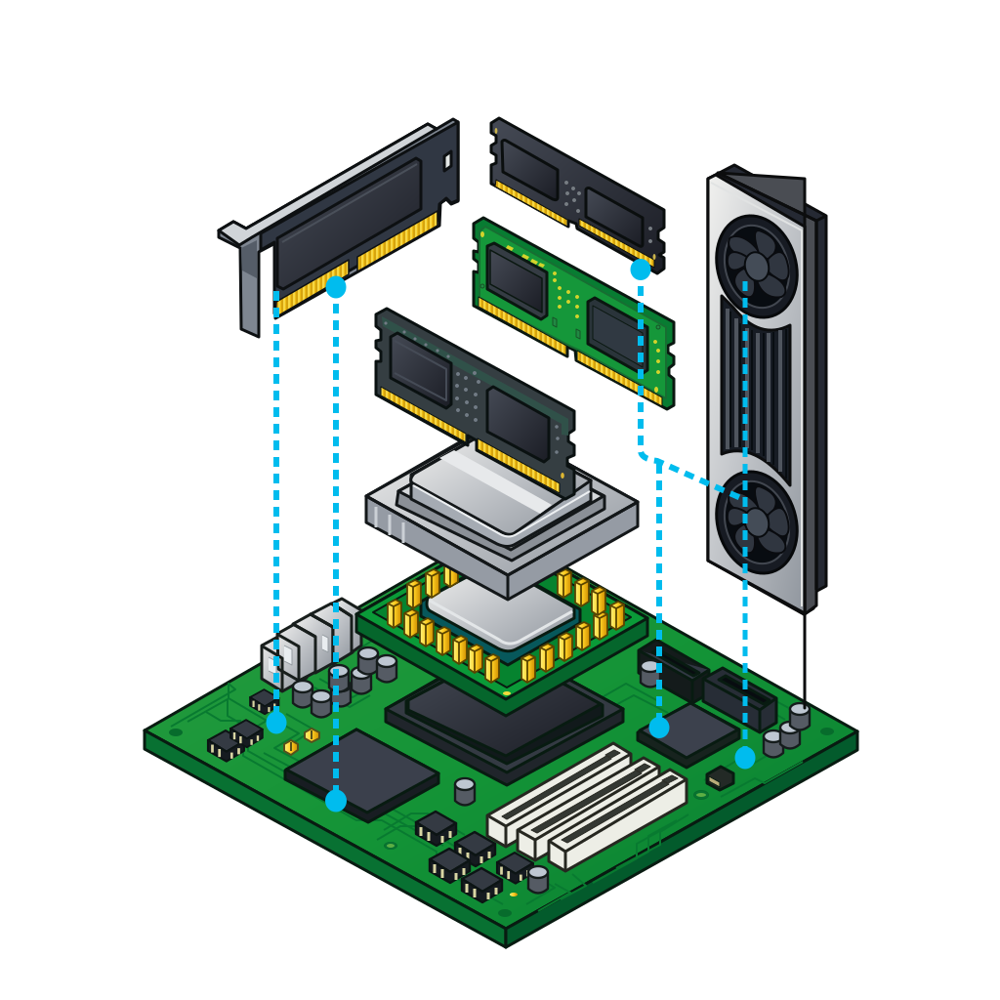

Understanding the MOAT of successful SaaS, Distribution v/s product and why this is no get rich quick scheme for an engineer.
November 2026 • 6 min read
I like to reverse engineer everything.
Understanding the MOAT of successful SaaS, Distribution v/s product and why this is no get rich quick scheme for an engineer.
